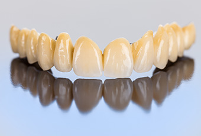
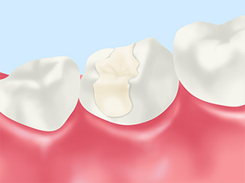
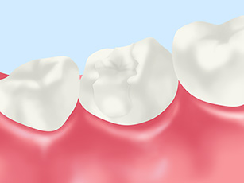
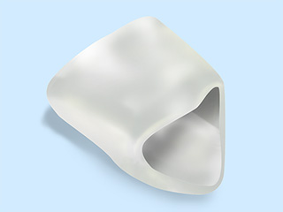
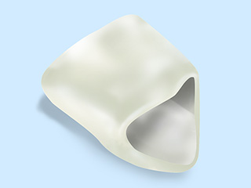
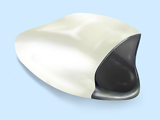
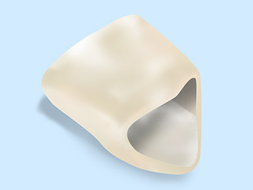
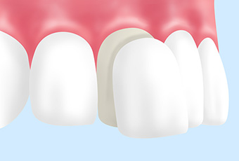
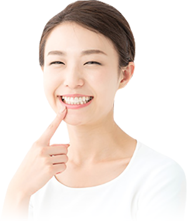

- ホーム
- 審美治療
天王寺まつい総合歯科の審美治療
口元を美しく、健康的に
当院の審美歯科は、口元を美しく改善するだけでなく、よく噛めて、お口の健康にも寄与するような治療を提供しております。歯を白くしたい、歯の形を整えたいなど、どんなお悩みでも構いませんので、お気軽にご相談ください。
ご要望に沿った審美歯科治療

天王寺まつい総合歯科では、患者さまのご要望に沿った審美歯科治療を提供しております。口元のコンプレックスなど、今現在、抱えていらっしゃるお悩みをできるだけ細かくお伝えください。その上で、審美性のみならず、機能性、安全性にも配慮した治療計画を立案いたします。
こんなお悩みはありませんか？
- 歯を白くしたい
- 詰め物や被せ物の変色を改善したい
- 歯の形を整えたい
- すきっ歯を改善したい
- 銀歯を白い歯に交換したい
- 笑った時に歯茎が目立つのを治したい
この中で、1つでも当てはまるものがあれば、当院までお越しください。
金属アレルギーが心配な方へ
歯科治療に使用する金属は、金属アレルギーの原因となることがあります。とくに、保険診療で使用する銀歯は、アレルギーの原因となるだけでなく、歯茎の黒ずみの原因となることもあります。そういった症状が心配な方には、メタルフリー治療がおすすめです。
金属材料は一切使わず、セラミックやジルコニアなどを用いるため、金属アレルギーのリスクはゼロとなります。見た目も天然歯に近い仕上がりとなります。
当院の取り扱い素材
インレー
-

ハイブリッドインレー
レジンとセラミックを混ぜ合わせたような歯科材料です。それぞれの欠点を補い合ったバランスの良い材料といえます。
-

ジルコニアインレー
人工ダイヤモンドとも呼ばれる素材で、かなり強度に優れ、摩耗や破折が起こりにくく変色のない材料です。
見た目もセラミック程ではないですが、天然歯に近い色や質感を再現することが可能です。
-
セラミックインレー
陶材であるセラミックのみで構成された素材です。色や質感が天然歯と酷似しており、極めて審美性の高い歯科材料といえます。
審美性や機能性、耐久性に優れる変色のない材料です。金属アレルギーのリスクはゼロです。
クラウン
クラウンも、ハイブリッドセラミックスからジルコニアまで、幅広く取り揃えております。それぞれの特徴は以下の通りです。
-

オールセラミック
オールセラミックは、陶材であるセラミックのみで構成された素材です。色や質感が天然歯と酷似しており、極めて審美性の高い歯科材料といえます。審美性や機能性、耐久性に優れる変色のない材料です。金属アレルギーのリスクはゼロです。
-

ジルコニア
ジルコニアは、人工ダイヤモンドとも呼ばれる素材で、かなり強度に優れ、摩耗や破折が起こりにくく変色のない材料です。見た目もセラミック程ではないですが、天然歯に近い色や質感を再現することが可能です。
-

メタルボンド
メタルボンドは、内側に金属、外側にセラミックを使った被せ物です。外側のセラミックは、着色や変色がない材料で、天然の歯に近い色や質感を兼ね備えています。内側に金属を使用しているため、万が一セラミックがかけた場合なども応急的な修理が可能です。オールセラミックやジルコニアと比べると、透明性という意味では審美性は多少劣ります。
-

ハイブリッドセラミック
ハイブリッドセラミックスは、レジンとセラミックを混ぜ合わせたような歯科材料です。それぞれの欠点を補い合ったバランスの良い材料といえます。内側が金でできたものと、銀でできたものと、全てハイブリットセラミックスのものの3種類をご用意しております。
ラミネートベニア

ラミネートベニアとは、一般的にはセラミック製のチップを歯の表面に貼り付ける治療法です。歯質をほとんど削らずに、歯の色や形態を改善することが可能です。
当院では、セラミック製のほかにハイブリットセラミックス制のチップもご用意しております。
コジェットサンドシステムにより表面処理を行い“接着力”を高める
オールセラミックやハイブリッドセラミックスというのは、材料の性質上、接着が一番重要となります。そこで有用なのがコジェットサンドシステムです。材料に特殊な表面処理を施し、化学的・機械的に接着力を高める装置です。これを用いることで、より強固なセラミックやハイブリットセラミックスの審美的な治療が可能となりました。
歯の色を美しくしたい人へ

歯の着色や変色でお困りの方には、ホワイトニングがおすすめです。歯磨きで落とすことのできない汚れ等をも、専用のホワイトニング剤で除去することが可能です。
白い歯を手に入れませんか？
ポリリン酸ホワイト二ング
くわしくはこちら